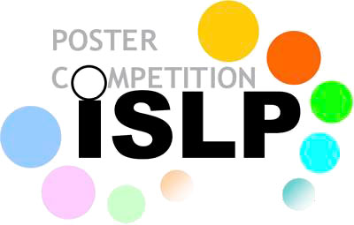

Sobre mí
Estadístico con más de 15 años de experiencia en diseño muestral, encuestas de hogares, evaluación de impacto y medición de pobreza en Bolivia. Investigador Senior de Fundación Aru, docente universitario de pregrado y postgrado, y facilitador de cursos nacionales e internacionales en inferencia causal, estrategias de muestreo y programación estadística. Coordinador Nacional del International Statistical Literacy Project (ISLP-IASE).
Formación
- En curso — Doctorado en Gestión del Desarrollo y Políticas Públicas, Universidad Mayor de San Andrés
- 2021 — Maestría en Modelaje Matemático, Universidad Mayor de San Andrés. Tesis: Un indicador dinámico basado en componentes principales como alternativa al índice de necesidades básicas insatisfechas en los censos. Caso de estudio: Bolivia
- 2011 – 2016 — Diplomados en Análisis Matemático de Datos, Fundamentos de Modelaje Matemático (UMSA), Evaluación de Políticas Sociales (UCB) y Educación Superior (UMSA)
- 2011 — Licenciatura en Estadística, Universidad Mayor de San Andrés
Experiencia profesional
- 2025 – actual — Investigador Senior, Fundación Aru
- 2021 – 2024 — Director Ejecutivo, Fundación Aru
- 2022 – actual — Docente, Universidad Católica Boliviana (Economía e Inteligencia de Negocios; Psicología desde 2025)
- 2016 – 2025 — Docente, Carrera de Estadística, Universidad Mayor de San Andrés
- 2012 – 2020 — Coordinador de la Unidad de Microdatos y Encuestas, Fundación Aru
- 2011 – 2012 — Investigador, Fundación Aru
- 2010 – 2011 — Especialista en muestreo, Unidad de Calidad Estadística, Instituto Nacional de Estadística (INE)
- 2008 — Asistente estadístico, Carrera de Estadística, UMSA
Proyectos destacados
Más de 35 estudios coordinados con organismos internacionales, gobiernos y universidades. Una selección:
- 2024 — Diagnóstico de Cuidados Obstétricos y Neonatales de Emergencia (CONE/EmONC) en Bolivia. UNFPA. Coordinador General
- 2024 — Estudio sobre experiencias y percepciones del embarazo en adolescentes y sus causas. UNFPA. Coordinador General
- 2024 — Evaluación del impacto del programa de saneamiento de tierras en Bolivia. BID. Coordinador General
- 2024 — Auditoría Local de Seguridad Ciudadana en el Municipio de El Alto. UNODC. Coordinador General
- 2021 — Pobreza multidimensional de hogares indígenas de la Chiquitania, con enfoque de género. FAO. Coordinador General
- 2020 — Monitoreo de Desempeño Humanitario (HPM) de la respuesta de UNICEF. UNICEF. Especialista cuantitativo
- 2020 — Sistemas de clasificación étnica y actitudes políticas. Universidad de Princeton. Coordinador General
- 2019 — Índice de Progreso Social (IPS) del Departamento de Tarija. Gobierno Autónomo Departamental de Tarija. Coordinador Técnico
- 2018 — Línea de base del Programa de Cooperación de UNICEF en Bolivia 2018–2022. UNICEF. Coordinador Técnico
- 2017 — Evaluación económica, social y financiera del Programa de Formación Técnica Profesional. COSUDE. Coordinador Técnico
La lista completa está en el CV.
Formación complementaria
Sampling, Weighting and Estimation (GESIS, Alemania, 2016) · Advanced Topics in Survey Sampling e Introduction to Structural Equation Modeling (IBGE–ENCE, Brasil, 2015) · Practical Bayes for Beginners (ISI World Statistics Congress, 2017) · Evaluación de Impacto, cursos básico e intermedio (CEDLAS–GRADE, 2013–2014) · ArcGIS aplicado a la cartografía estadística (2024).
Redes y membresías

Coordinador Nacional del International Statistical Literacy Project (ISLP-IASE) en Bolivia.
Miembro regular del International Statistical Institute (ISI).
Idiomas y software
- Idiomas: español (nativo), inglés (avanzado)
- Estadística: R, Stata, SPSS, Julia, Python, Redatam, Povmap
- Visualización y tableros: Shiny, Quarto, Looker Studio, Power BI
- Edición y presentaciones: LaTeX, Beamer, R Markdown, Quarto
- Cartografía: QGIS, ArcGIS, MicroStation
Conectemos
Si trabajas en encuestas, evaluación, datos o educación estadística, me encantará conversar. Escríbeme o sígueme en LinkedIn: